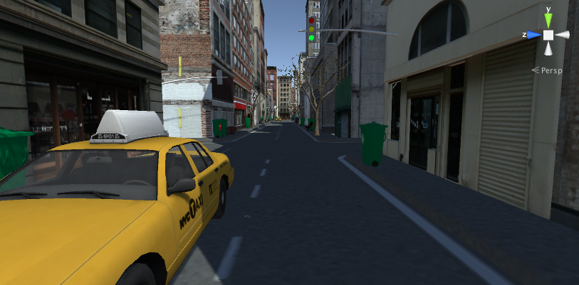
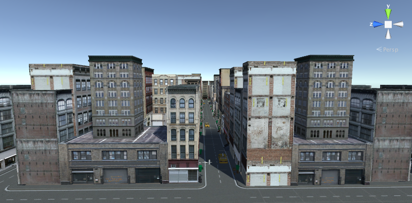

During my final semester at NYU I worked in virtual reality. Using Unity and Google Cardboard our team created a game that allowed you to explore life through the eyes of different animals. You see the city from the perspective of a bird, kangaroo, cockroach or cat. We took into account a number of difference things the animals experiece, such as sight and movement. For example bird have ultra violet vision and a cat's vision is slightly out of focus. This project is still in progress

